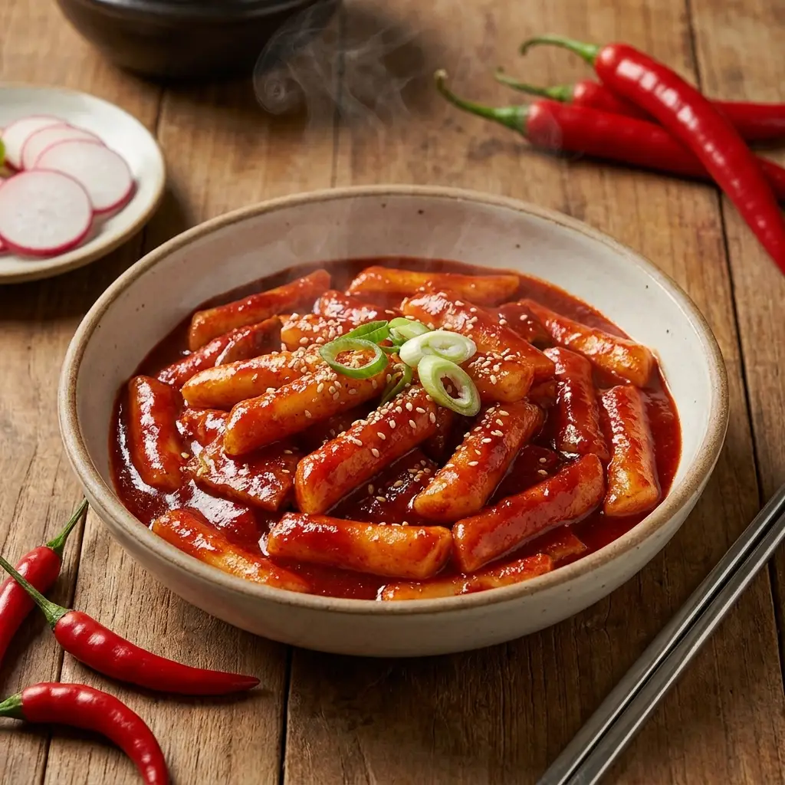

Les 8 ingrédients de la cuisine coréenne (et par quoi les remplacer)

Huit ingrédients suffisent à cuisiner coréen. Trois d'entre eux ne se remplacent par rien — et c'est en essayant de les remplacer que la plupart des tentatives échouent.
On peut cuisiner coréen avec huit ingrédients. Pas douze, pas vingt : huit. Le reste — légumes, viande, riz — se trouve dans n'importe quel supermarché.
Mais parmi ces huit, trois ne se remplacent par rien, et c'est en essayant de les remplacer que la plupart des tentatives échouent. Voici lesquels, ce qu'ils sont vraiment, et par quoi tu peux légitimement les substituer quand c'est possible.
Les trois irremplaçables
고춧가루 go-tchout-ga-rou — le piment en poudre
C'est le ingrédient coréen. Grossièrement moulu, presque en flocons, d'un rouge profond, et beaucoup moins fort qu'il n'en a l'air : il colore énormément et pique modérément.
Il en existe deux moutures : fine pour les pâtes et les sauces, grossière pour le kimchi. Si tu n'en prends qu'une, prends la grossière.
고추장 go-tchou-djang — la pâte de piment fermentée
Une pâte épaisse, rouge sombre, à la fois piquante, salée et nettement sucrée — c'est cette douceur qui surprend. Base du bibimbap, du tteokbokki et de la plupart des marinades.
Ce n'est pas de la sriracha, ni de la harissa : celles-ci sont liquides, acides et sans sucre. Aucune ne donne le même résultat.
참기름 tcham-gi-reum — l'huile de sésame grillé
Ambrée, très parfumée, elle s'ajoute en fin de cuisson ou à cru, jamais pour faire revenir : la chaleur détruit son arôme. Quelques gouttes suffisent.
Attention à ne pas acheter l'huile de sésame claire, non grillée, vendue au rayon diététique : ce n'est pas le même produit. Celle qu'il te faut est foncée et sent fortement dès l'ouverture.
Les trois fermentations
된장 dwén-djang — la pâte de soja
Cousine du miso japonais, mais plus rustique, plus salée et plus franche. Elle donne le doenjang-jjigae, le ragoût quotidien coréen.
Substitution acceptable : du miso brun foncé, en réduisant un peu la quantité. Le résultat est plus doux, mais honnête.
간장 gan-djang — la sauce soja
Là où ça se complique : il en existe plusieurs. La sauce soja de table, pour assaisonner, est proche de la japonaise. La guk-ganjang, destinée aux soupes, est plus claire et beaucoup plus salée — n'intervertis pas les deux.
Substitution acceptable : une sauce soja japonaise classique pour tous les usages courants.
젓갈 djot-gal — les saumures de poisson
Poissons ou crustacés salés et fermentés. C'est ce qui donne au kimchi sa profondeur. Odeur puissante, usage discret.
Substitution acceptable : une sauce de poisson d'Asie du Sud-Est. Ou rien du tout — le kimchi végétarien existe, il est simplement plus léger.
Les deux algues
| Algue | Coréen | Usage |
|---|---|---|
| Feuilles séchées | 김 gim | Gimbap, ou grillées et salées en accompagnement du riz |
| Wakamé | 미역 mi-yok | La soupe d'anniversaire, et celle des jeunes mères |
Toutes deux se conservent des mois au sec et coûtent peu. Le wakamé triple de volume en trempant : une petite poignée suffit pour quatre.
Par quoi commencer, concrètement
1. Piment en poudre (mouture grossière)
2. Pâte de piment fermentée
3. Huile de sésame grillé
4. Sauce soja
5. Pâte de soja
Conservation — le point que personne ne mentionne
- Le piment en poudre se garde au congélateur. À température ambiante il perd sa couleur en quelques mois et rancit. C'est le conseil coréen standard, et il change tout.
- Les pâtes fermentées vont au réfrigérateur après ouverture, avec le film plastique remis à plat sur la surface.
- L'huile de sésame se garde à l'abri de la lumière et s'utilise dans l'année.